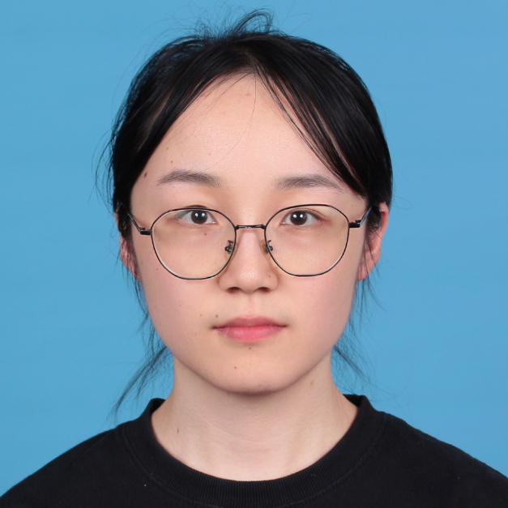
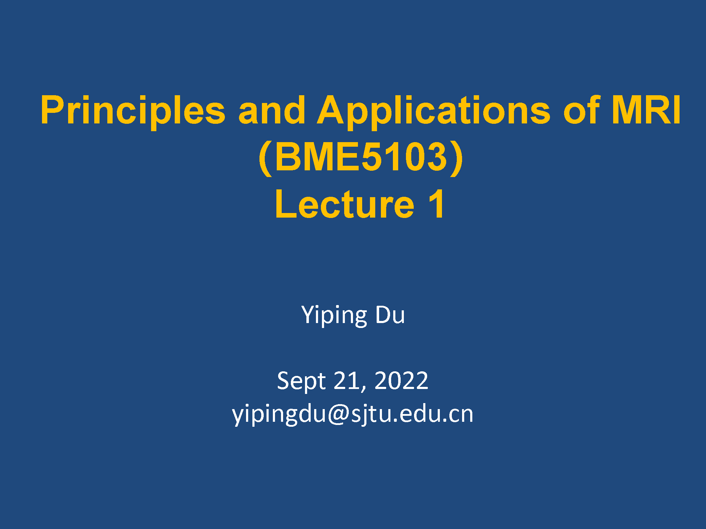

|
Mengzhu Wang I obtained my M.S. (2024) in Electronic and Information Engineering from Shanghai Jiao Tong University, advised by Prof. Yiping Du, and B.S. (2021) in Information Engineering from Zhejiang University. My research interests lie in computer graphics, particularly rendering. |
 |
Experiences |
|
|
Research Intern CVGL lab @ Westlake University (Advisor: Prof. Peidong Liu) Feb 2024 - May 2024 |
|
M.Eng in Electronic and Information Engineering IMIT @ Shanghai Jiao Tong University (Advisor: Prof. Yiping Du) Sep 2021 - Mar 2024 |
|
B.Eng in Information Engineering Zhejiang University Sep 2017 - June 2021 |
Publications |
|
Accelerated Dynamic Renal Phase-Contrast MRI using A Score-based Diffusion Network
Mengzhu Wang, Huajun She, Yiping Du International Conference on Biomedical and Bioinformatics Engineering (ICBBE), 2023 paper / slides |
Projects |
| Small Rasterizer A rasterizer featuring back face culling, perspective correct interpolation, and advanced mapping techniques such as normal mapping, texture mapping, Blinn-Phong shading, bump mapping, and physically based rendering. project page |
Small Path Tracer
A Monte-Carlo Path Tracer with BVH acceleration, featuring Russian Roulette, MSAA, and the Microfacet Model. It also incorporates Importance Sampling and MIS, along with multithreading. project page |
Introduction to Computer Graphics (online by Prof. Lingqin Yan)
Rasterization, ray tracing and simulation course / report |
Real-Time High Quality Rendering (online by Prof. Lingqin Yan)
PCSS, PRT, SH, SSRT, Kulla-Conty BRDF, Temporal Denoising course / report |
Teaching |
|
 |
Teaching Assistant BME5103: Principles and Applications of MRI (Fall 2022) SJTU |
|
Thanks for the template from Jon Barron. |